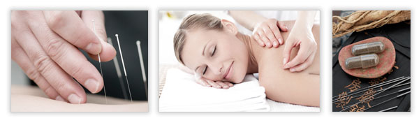
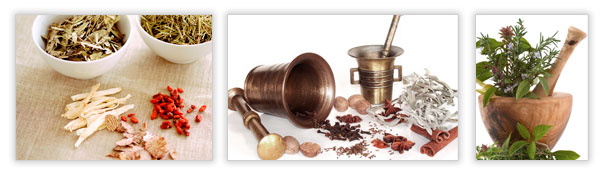
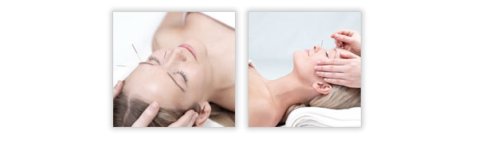
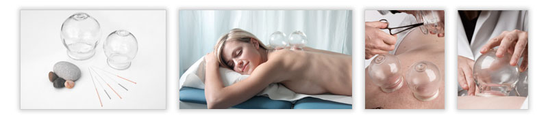

Scope of practice
Acupuncture Therapy
Many diseases have been successfully treated by acupuncture. The most common ailments currently being treated are: lower back pain, Cervical Spondylosis, Condylitis, Arthritic Conditions, Headaches of all kinds (including migraine), Allergic Reactions, general and specific use for Analgesia (including surgery) and relief of muscles spasms. There have also been successful clinical cases in the use of acupuncture in treating anxiety disorders and depression. Likewise, very high success rates have been found in treating addictions to alcohol and tobacco (nicotine).
Herbal Medicine
Herbal medicine has a long history in China. It started from as early as the Stone Age and completed in the later part of the 5th century B.C. Herbs can be categorized into “food herbs” and “medicinal herbs”. Medicinal herbs are dispensed to each patient as an individual formula based on the patient’s medical condition, in the form of herbs’ original shapes or formulated powder, tea, tablets, encapsulations or syrups.
Medicinal herbal therapy works in concert with acupuncture by providing the nourishing support for the energetic “re-programming” and “re-balancing” efforts of acupuncture.
Cosmetic Acupuncture
Cosmetic Acupuncture is sometimes also known as Acupuncture Facelift. It is a pain-free, non-surgical method to reduce the signs of aging. It has been discovered that some meridians either begin or end on the face while some others have internal branches that go to the face. By inserting acupuncture needles into some specific points around face, the flow of energy through the face can be manipulated to reduce wrinkles, make skin delicate and fair, improve the elasticity of the facial muscles and eventually rejuvenate the looking of face.
Cupping Therapy
Cupping is a method to stimulate the acupuncture points by applying suction through a glass jar or plastic cup, in which a partial vacuum has been created. This procedure produces blood congestion at the site, and therefore stimulates the flow of Qi through the acupuncture points. Cupping is often used for back pain, sprains, soft tissue injuries and etc.
Moxibustion Therapy
Moxibustion is another traditional Chinese medicine procedure that is usually used together with acupuncture. An acupuncture needle is inserted into a specific point and retained. The tip of the needle is then wrapped in moxa, a small spongy herb, and ignited, generating heat to the point and the surrounding area. The purpose of moxibustion, as with most forms of traditional Chinese medicine, is to stimulate the flow of Qi, restore and maintain health.
Moxibustion has been used in China for thousands of years; In western medicine, moxibustion has been successfully used to turn breech babies into a normal head-down position prior to childbirth. Studies by American Medical Association has found that up to 75% of women suffering from breech presentations before childbirth had fetuses rotated to the normal position after receiving moxibustion.